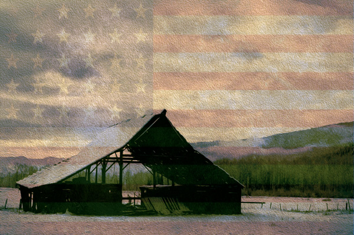

I am a sophomore year Frontend Web Development student at The Art Institute of Portland. I love what I do. It's my passion, my soul, my love. My life blood. My Git Hub account is my most current and up-to-date work in web development. It is updated with new projects and work I have done in my classes almost daily.
I'm not one to wait for the right class or lecture, I love to seek out answers and solutions, and keep pushing myself. It's an enjoyable part of learning for me. My skills & knowledge are: CSS3, HTML5, SASS, Web Standards, UI/UX, Photoshop, Illustrator, InDesign, Web Design & Layout, and version control using Git/Git Hub. In addition to these I am beginning to learn local server environment on Mac, command line, JavaScript, Compass, PHP, and Wordpress.
I am a reader. I devour books, magazines, blogs, and random information here and there. Of the seven or so professional industry periodical subscriptions I subscribe to I would say my two most favorite are Communication Arts and Dwell. I love the clean, crisp photography and layout of Communication Arts, and the absolutely gorgeous homes and buildings that I find in Dwell inspire me. I love architecture and seeing what people can do with indoor and outdoor spaces. Light and how it interacts within a space and outdoors has always been intriguing to me. Dwell magazine also shows homes and buildings from all around the world, which I love. I am an adventurer and keen observer at heart.
In my off time I stay grounded, or in the flow as it were, with whitewater kayaking and alpine skiing. Time outdoors is a life balancer and brings in new ideas, fresh perspectives and new energy to then bring to my work and life.